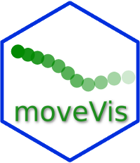

Authors and Citation
Citation
Schwalb-Willmann, J.; Remelgado, R.; Safi, K.; Wegmann, M. (2020). moveVis: Animating movement trajectories in synchronicity with static or temporally dynamic environmental data in R. Methods Ecol Evol. 2020; 11: 664–669. https://doi.org/10.1111/2041-210X.13374
@Article{,
author = {Jakob Schwalb-Willmann and Ruben Remelgado and Kamran Safi and Martin Wegmann},
title = {moveVis: Animating movement trajectories in synchronicity with static or temporally dynamic environmental data in R},
journal = {Methods in Ecology and Evolution},
number = {11},
pages = {664-669},
year = {2020},
doi = {10.1111/2041-210X.13374},
}